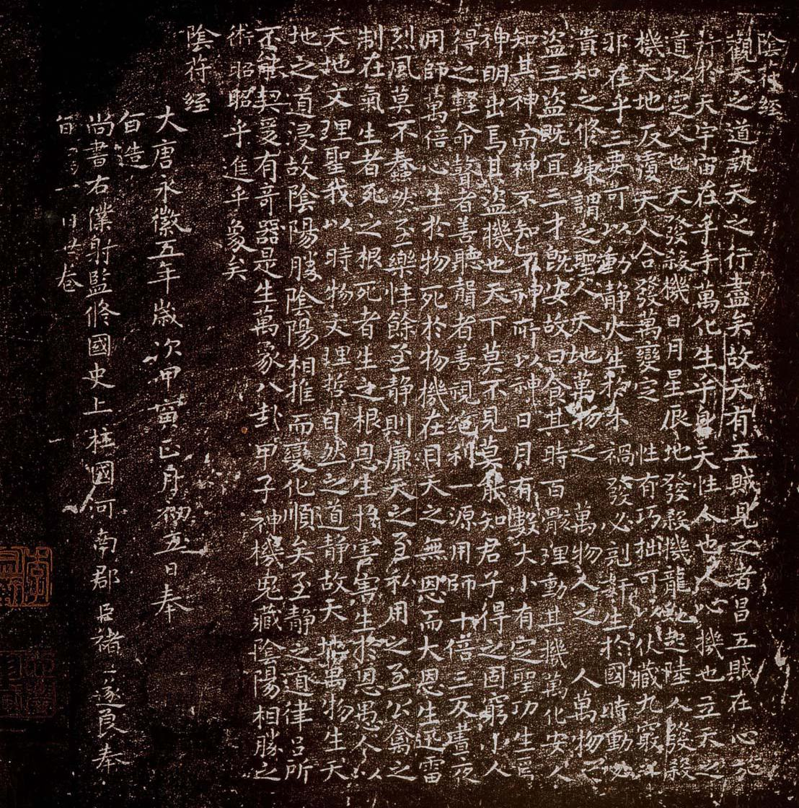
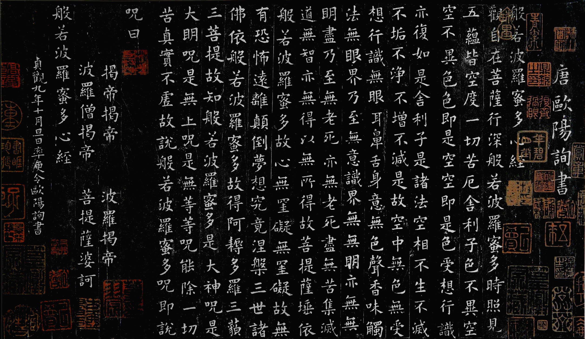

致力於分享有意義的東西@3cfi
觀天之道，執天之行，盡矣。 故天有五賊，見之者昌。 五賊在心，施行於天。 宇宙在乎手，萬化生乎身。 天性人也，人心機也。立天之道，以定人也。 天發殺機，移星易宿；地發殺機，龍蛇起陸；人發殺機，天地反覆；天人合發，萬化定基。 性有巧拙，可以伏藏。九竅之邪，在乎三要，可以動靜。 火生於木，禍發必克；奸生於國，時動必潰。知之修煉，謂之聖人。 天生天殺，道之理也。天地萬物之盜，萬物人之盜，人萬物之盜。三盜既宜，三才既安。 故曰食其時，百骸理；動其機，萬化安。人知其神之神，不知不神之所以神也。 日月有數，大小有定，聖功生焉，神明出焉。 其盜機也，天下莫能見，莫能知。君子得之固躬，小人得之輕命。 瞽者善聽，聾者善視。絕利一源，用師十倍。三返晝夜，用師萬倍。 心生於物，死於物，機在目。 天之無恩而大恩生。迅雷烈風莫不蠢然。 至樂性余，至靜性廉。天之至私，用之至公。 禽之製在氣。生者死之根，死者生之根。恩生於害，害生於恩。 愚人以天地文理聖，我以時物文理哲。 人以愚虞聖，我以不愚虞聖；人以期其聖，我以不期其聖。故曰：沈水入火，自取滅亡。 自然之道靜，故天地萬物生。天地之道浸，故陰陽勝。陰陽相推而變化順矣。
觀世音菩薩，行深般若波羅蜜時，照見五陰空，度一切苦厄。 舍利弗！色空故無惱壞相，受空故無受相，想空故無知相，行空故無作相，識空故無覺相。何以故？舍利弗！非色異空，非空異色；色即是空，空即是色。受、想、行、識，亦如是。舍利弗，是諸法空相，不生不滅，不垢不淨，不增不減。是空法，非過去、非未來、非現在。是故空中無色，無受、想、行、識；無眼、耳、鼻、舌、身、意；無色、聲、香、味、觸、法；無眼界，乃至無意識界；無無明，亦無無明盡；乃至無老死，無老死盡。無苦、集、滅、道。無智亦無得，以無所得故。菩薩依般若波羅蜜故，心無罣礙；無罣礙故，無有恐佈，離一切顛倒夢想苦惱，究竟涅槃。三世諸佛依般若波羅蜜故，得阿耨多羅三藐三菩提。故知般若波羅蜜，是大明咒，無上明咒，無等等明咒，能除一切苦，真實不虛。故說般若波羅蜜咒，即說咒曰：竭帝，竭帝，波羅竭帝，波羅僧竭帝，菩提僧莎呵。
